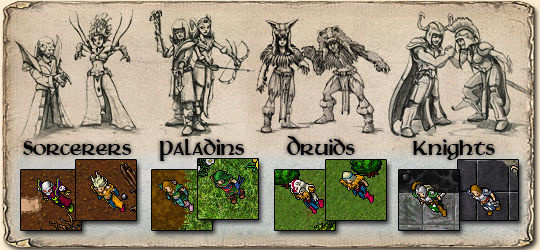

mas podem ser devastadores com inúmeros tipos de magias e runas de ataque. Sua especialidade é a energia.
Por serem muito semelhante aos sorcerers, os druidas fazem uso das mesmas runas que eles. Sua especialidade é o gelo.
Paladins são grandemente habilidosos em combate à distância e por isto são os melhores arqueiros. Possuem um potencial mágico alto,
mas sendo inferior aos magos e superior aos cavaleiros. As armas utilizadas pelos paladinos, são: arcos, flechas e lanças.
Sua evolução na área de magias é a mais limitada e lenta em comparação às demais vocações. As armas utilizadas pelos cavaleiros, são: espadas, machados e clavas.